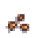

Drag the watering can over a plant and click on it to water it!

- Always sow fresh seed.
- Parsnips need a long growing season, so sow as soon as the soil is workable.
- Loosen the soil to a depth of 12-15 inches and mix in a 2- to 4-inch layer of compost.
- Sow 2 seeds per inch ½ an inch deep
- Seedlings will emerge in 2-3 weeks
- Thin the seedlings to stand 3-6 inches apart.
- Water during the summer if rainfall is less than 1 inch per week.
- Always keep the beds free of weeds.
- Parsnips mature in about 16 weeks.
- Leave your parsnips in the ground for a few frosts but harvest before the ground freezes.
- If you leave them in the ground for the winter, cover them with a thick layer of mulch and harvest immediately after the ground thaws in the spring.